Practical Pattern Drafting for a Custom Bra
At the Han Sun-mi Lingerie Design Institute, we teach not only patterns for the standard Korean female breast shape but also a custom underwear pattern drafting method (맞춤속옷 패턴 제도법) developed through research into patterns matched to each individual's body — guiding every student through drafting practical patterns and making bras fitted to her own figure.
Custom underwear practical pattern drafting analyses the characteristics of each woman's breast shape and considers not just size but the shape of the cup as well.
The case study: a 70B bra
The following documents the custom bra-making process of Ms. Lee (이OO씨), a student in the practical pattern course. She wears a 70B cup size, but her body differs from the average in two measurable ways:
- Her B.P. point (B.P(유두) — the bust point / nipple apex) sits 0.5 cm lower than the average body type.
- The distance from the B.P. point to the outer cup circumference (바깥쪽 컵둘레 — lateral cup circumference) is about 1 cm longer than the average body type.
The lower-cup (하컵) pattern was drafted specifically to accommodate those two deviations. The post walks through the full build: nonwoven interlining cup pieces for the test fitting (가봉), upper and lower cups (상·하컵) sewn to fit her figure, and the completed 70B lace full-cup custom bra. It also includes Ms. Lee's making diary: cutting the lace, cutting the lining (밑받침), and attaching the ribbon motif.
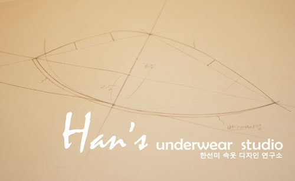
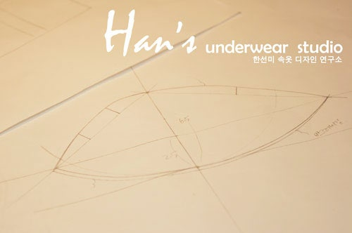
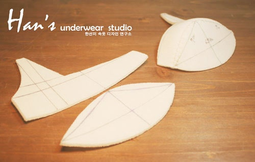
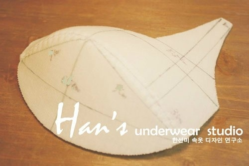
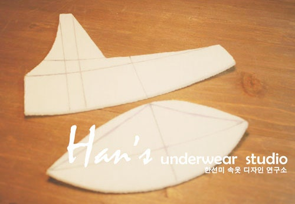
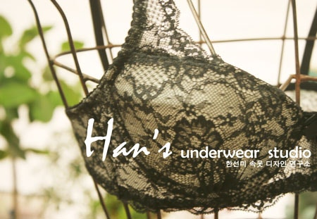
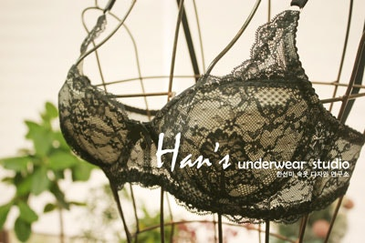
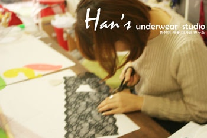
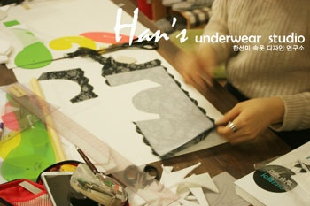
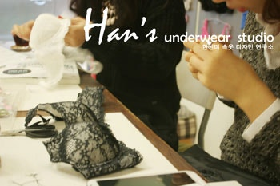
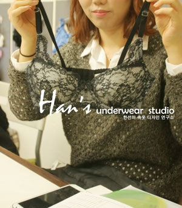
Why size alone wasn't enough
Ms. Lee's bust was a completely ordinary size on paper. Yet the cups of bras sold in Korea did not match the shape of her breasts, and she always had bright red underwire marks (와이어 자국) at the outer cup edge.
Through making this custom bra she learned her exact breast shape and measurements — and realised just how badly the bras she had been wearing failed to match her body. Every student in the institute's practical pattern course has the same experience.
The institute will continue its custom lingerie research to systematise sizing that fits Korean women's bodies, so that every Korean woman can wear a bra for a comfortable and beautiful silhouette.